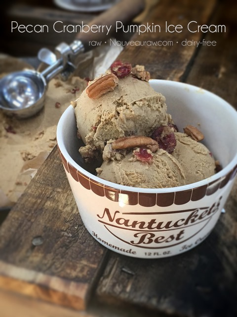

~ raw, gluten-free, dairy-free ~
Ready for Fall flavors but not quite ready to let summer slip away? This raw ice cream is the perfect bridge between the two seasons.
It’s out-of-its-gourd Amazing!
Pecan Cranberry Pumpkin Ice Cream is an out-of-its-gourd frozen dessert experience. This ice cream pays homage to the beautiful Autumn that is quickly coming upon us. I am a pumpkin lover, and my cravings for pumpkin intensifies as the Fall season approaches.
I know that this beautiful gourd is soon to be available and knowing that it’s “season” comes and goes in the blink of the eye, I start dreaming up new recipes. Perhaps there’s truth to the whole “absence makes the heart grow fonder” thing after all.
This recipe consists of pure pumpkin puree, whole foods, and a blend of warm, seasonal spices like nutmeg, cinnamon, ginger, and a hint of clove.
This morning as I was removing the ice cream batter from the machine, I decided I needed a taste tester! I mean, after I took a few bites and my eyes rolled back into my head, I knew it was a winner, but it always helps to get other opinions. Before I ever release a recipe on this site, I try to get multiple testers so I can fine-tune the recipe if need be. But unfortunately, my loving husband is out-of-town.
But! Ruben, our electrician, was working here today!! I can use him as my guinea pig! :) So, I went on the hunt for Ruben and had him come into the kitchen to try the ice cream. He took a spoonful, and his eyes lit up after swallowing it. He ended up devouring a whole bowlful. He laughed that he was eating ice cream for breakfast, but the scraping spoon sounds, lip-smacking, and the empty bowl in the sink assured me that this recipe was a winner.
A side story about my ice cream dish. Last weekend, I had the pleasure of meeting one of our Nouveau Raw subscribers. Hmm, the word subscribers sounds too impersonal… she has become a wonderful friend over the past year. Her name is Jana and is from Switzerland. She was on her way to attend Living Light Culinary Art Institute. As she was making her way there, she stopped in Portland for a few days, and we made arrangements to meet for lunch. Bob and I drove in, and we all had a very good time over an excellent raw lunch at the Blooming Lotus. We invited Jana to stay with us that evening, and she did just that. She came bearing several gifts, and a set of these gorgeous ice dishes was one of them. She must have caught on to my love for dishware. So, today I had to make a special ice cream just for these bowls. I think they complement one another, don’t you? Many thanks once again Jana and many, many blessings on your journey!
 Ingredients:
Ingredients: